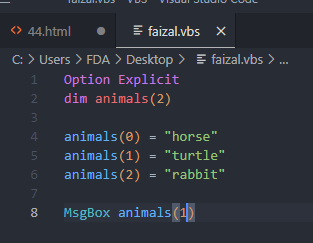
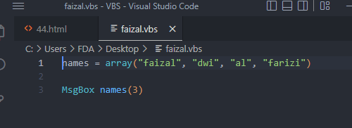
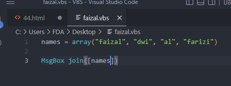
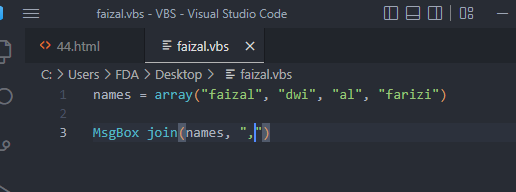
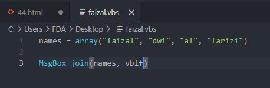
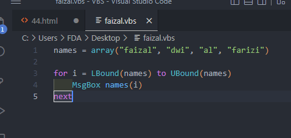
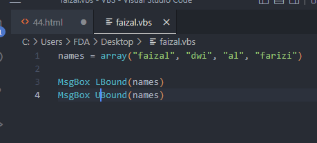
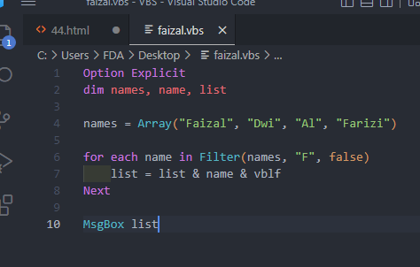
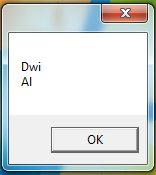
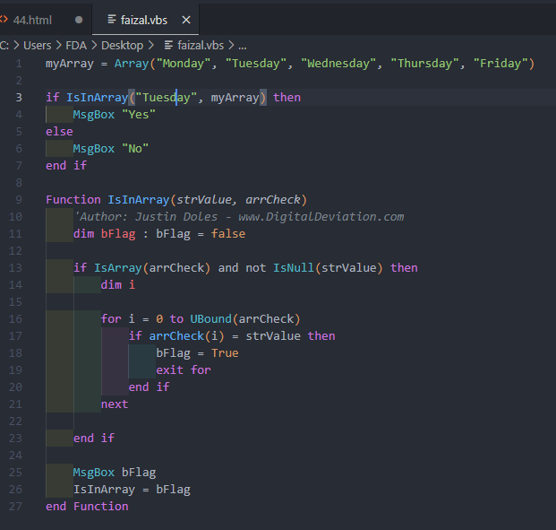

Creating Arrays
Array Basic


Join

pemisah ketika join


Menampilkan array 1 per 1

LBound & UBound
- LBound : menampilkan angka array pertama
- UBound : menampilkan angka array terakhir

- LBound : 0
- UBound : 3
Filter

- akan menampilkan isi array yang didalamnya terdapat yang dicari
False

- menampilkan yang isi arraynya tidak ada di pencarian filternya
mengfilter

- Hasil :

Example
